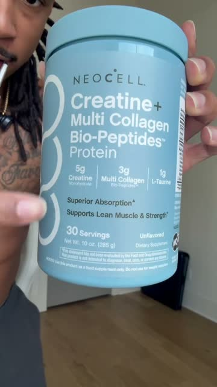

Fifty-eight seconds, one room, one tub. He opens by naming her problems and the bottle she bought for each one, three in seven seconds. Then one question turns the whole list around. He never has to convince her she has a problem, because she has already paid for three of them. And we can make a better version of this than his, because we know exactly what our women are buying. They told us, in their own words.
Austin Brown · creatine and collagen powder · 58 seconds · one room, one phone, one person
Most supplement videos spend their first half proving the problem is real. This one skips that completely. The woman watching already has three bottles on her counter, so he starts by naming them, and she recognises her own kitchen before he has said one word about his product.

0:305g, 3g, 1g, read off the label"GLP butt? Creatine. Starting to look flat? Creatine. Worried about your hair, nails or skin? Collagen peptides."
Every problem is the phrase his viewer says to herself in the mirror. Nobody in a doctor's office says GLP butt, and that is exactly why it lands. The answers are one word each, so the rhythm does the work and she is nodding by the second pair.
"But then why the hell are we buying all of this separately?"
Seven seconds ago those three bottles were her solution. Now they are her problem. He did not attack any of them, he only counted them out loud.
"Before someone says, oh, what do you know about being on the GLP? I've been on one myself, and let me tell you, I loved it, but I started to need support."
Two moves in one breath. He earns the right to talk about it, and he respects what she is already doing. I loved it, but. He adds to her routine, he never tells her she was wrong.
"As the health creator of the year, I'm not just putting any supplement in my body. So I went looking for a more cost efficient support system. And I saw all these girls talking about this NeoCell stuff."
The award is in his hand, then two women's videos sit in the corner of the screen, then the shop page with the sold count and the stars. None of it is him saying it is good. And notice the motive he gives: cost efficient. Money is the reason, the product is the answer.
"It's five grams of creatine, three grams of collagen peptides, one gram of taurine, and just one scoop."
The tub fills the frame and the three numbers are printed right there on it. He says out loud what she can see, so she is checking it with her own eyes while he talks. One scoop is the whole promise.
"So instead of buying the creatine over here, the collagen over there, and all these different supplements, NeoCell put the essentials together."
A picture of a bed covered in bottles pops up in the corner. That picture is the strongest frame in the video, because it is her cupboard. His is a stock photo. Yours can be your actual shelf.
"It's completely flavorless, so I can just throw it in whatever I'm drinking, or she's drinking."
One line on how it fits into a day she already has. Or she's drinking, said off camera, tells you somebody else in the house takes it too.
"On my GLP journey, the last thing I wanted to do was lose the muscle that I had."
He goes back to the fear he opened on, then a sale, stock up, check below. The sale and the stock up are the parts we leave behind.
Every woman who orders from us gets a short survey, and one of the questions is what other supplements do you take, and why. Austin had to guess the three bottles on his viewer's counter. We have tens of thousands of real answers, so your list does not have to be a guess.
7,226 of them named supplements they already take. 1,871 named four or more. And 661 already buy, as a separate bottle, an ingredient that is inside our capsules: 371 ashwagandha, 289 berberine. That is his creatine over here, collagen over there, almost word for word.
3,583 already take a probiotic. 787 use boric acid. 364 take cranberry or D-mannose. And 597 told us, without being asked, that what they tried worked for a while and then came back.
In their words, exactly as they typed it:
His list is three bottles for three problems, and his answer is a cheaper tub. Our women have four bottles for one problem that keeps coming back, and that is a much stronger question to ask out loud: why does it keep coming back? His video can only answer with a price. Ours can answer with a reason, the layer underneath that none of those bottles was made for.
Put every gut and stress supplement you have ever bought on the counter. Labels turned away from the camera. That is your whole set.
Pick up one bottle per line, say the problem, say the one word, put it down.
He had an award and a sold count. You have the women themselves, which is better.
His is three numbers. Ours is three ingredients and the reason they sit together.
No sale, no stock up, no code. His ends on all three and that is the one part we never take.
The bathroom drawer or the cupboard under the sink, where the washes and the boric acid and the cranberry live. Open it on camera. Labels turned away.
One item out per line, one word each.
This is where his video only had a price. Yours has a reason.
No sale, no stock up, no code, no sell-out line.
The body as the hook. He opens on his own back. We never open on a stomach, a waistband or a before and after.
The sale and the stock up. No sale, no code, no running-out line, ever.
Brand names on the shelf. Every old bottle has its label turned away. You compare what is in them, never who made them.
Research cards we cannot stand behind. His cards fly by in two seconds. If you put one on screen, it has to say exactly what the source says, or leave it out.
Never against a doctor. Being told it was normal when it was not is yours to say. Saying a prescription does not work, or telling her to stop one, is the line that gets a video pulled.
Helps support. That is the phrase for any effect. Your own experience is yours to describe, the viewer's body is not.
No weight promises. Bloated by four o'clock is yours to say. A number on a scale is not.
Three bottles, one question, and she does the maths herself.
Breakdown 18 · nuora creator library · for our creators only